061 — Imágenes, capas, registros y estándar OCI
Parte: 05 — Contenedores, Docker y OCI
Nivel: intermedio · Horas estimadas: 4
Laboratorio: container · Estado: EXECUTABLE_CORE
🎯 Propósito
Establecer con precisión qué es una imagen de contenedor y qué garantiza exactamente el estándar OCI, porque de ahí sale la primera mitad del contrato que la clase 060 dejó por comprobar. Una imagen no es un fichero: es un manifiesto que apunta a capas por su huella, y esa propiedad decide tres cosas que en producción se pagan caras — que una etiqueta puede cambiar bajo tus pies, que un fichero borrado sigue dentro, y que la misma etiqueta puede entregar imágenes distintas según la arquitectura de quien la descarga.
📚 Resultados de aprendizaje
Al finalizar podrás:
- Describir qué normaliza cada una de las tres especificaciones OCI y qué queda fuera del contrato.
- Desplegar por huella en vez de por etiqueta, y justificar la diferencia con un incidente concreto.
- Demostrar que un fichero borrado en una capa posterior sigue presente en la imagen.
- Construir y verificar un índice de imágenes para varias arquitecturas.
- Leer la configuración de una imagen y distinguir lo que el motor aplica de lo que es solo documentación.
🧩 Conceptos centrales
| Concepto | Comprensión verificable |
|---|---|
manifiesto |
Documento JSON que enumera la configuración y las capas de una imagen por su huella. La imagen no es un archivo: es este documento y lo que referencia. |
direccionamiento por contenido |
Todo se identifica por sha256. Una etiqueta es un puntero mutable; una huella es inmutable y verificable. |
índice de imágenes |
Manifiesto que apunta a varios manifiestos, uno por arquitectura y sistema operativo. Explica que la misma etiqueta entregue binarios distintos a máquinas distintas. |
capa |
Archivo tar con las diferencias respecto de la anterior. Las capas se apilan en un sistema de ficheros de unión y una capa nunca modifica a la anterior: la tapa. |
fichero de borrado |
Marca especial que oculta un fichero de una capa inferior. Lo oculta: no lo elimina, así que sigue extraíble de la imagen. |
configuración de la imagen |
JSON con punto de entrada, comando, variables, usuario y directorio de trabajo. Es el contrato de ejecución — y parte de sus campos son solo documentación. |
🧠 Modelo mental
Una imagen es un artefacto inmutable; un contenedor es un proceso aislado con límites y dependencias explícitas, no una máquina virtual pequeña.
Aplicado a esta clase, separa siempre cuatro planos: intención (qué necesita el usuario), configuración (qué declaramos), estado observado (qué existe de verdad) y evidencia (cómo sabemos que cumple). Confundirlos produce diseños que se ven correctos en un diagrama pero fallan al operar.
🗺️ Flujo de razonamiento

📖 Desarrollo
1. Tres especificaciones, y lo que queda fuera
«Contenedor OCI» no es una cosa sino tres normas que encajan:
especificación de IMAGEN cómo se describe y se empaqueta
manifiesto, configuración, capas, índice para varias arquitecturas
especificación de EJECUCIÓN cómo se arranca un contenedor a partir de un
paquete de sistema de ficheros y un `config.json` con espacios de nombres,
límites y capacidades
especificación de DISTRIBUCIÓN cómo se sube y se baja de un registro
una API HTTP con verbos, huellas y un flujo de autenticación
Lo que garantizan juntas es exactamente lo que la clase 060 llamó «el contrato del contenedor»: una imagen construida con una herramienta se ejecuta con otro motor y se guarda en cualquier registro, sin acuerdos privados entre fabricantes. Esa portabilidad es real y es lo que hizo que las tres nubes convergieran.
Y conviene ser igual de preciso con lo que no normalizan, porque ahí están las fugas que la hipótesis predijo:
fuera del contrato
cómo se CONSTRUYE la imagen (Dockerfile no es una norma OCI)
la red: nombres, DNS, publicación de puertos
el almacenamiento persistente y su ciclo de vida
la identidad con la que el contenedor habla con el exterior
la orquestación: reinicio, escalado, ubicación
la política de seguridad efectiva del anfitrión
Esa lista es el índice de las once clases siguientes, y no es casualidad: todo lo que la norma no cubre es donde cada plataforma decide por su cuenta, y donde una aplicación que «funciona en mi máquina» deja de funcionar en otra.
Una precisión que ahorra confusión de vocabulario:
imagen el artefacto: manifiesto + configuración + capas
contenedor una ejecución de esa imagen, con su capa de escritura propia
registro el almacén que sirve manifiestos y capas por huella
motor quien las descarga y prepara: containerd, CRI-O, Podman, Docker
tiempo de ejecución quien crea el proceso aislado: runc, crun, youki
Docker es un producto que integra varias de esas piezas; ninguna de ellas es «Docker» en el sentido normativo. Saberlo importa porque las plataformas gestionadas de las partes 02 a 04 ejecutan contenedores sin Docker, y aun así ejecutan las mismas imágenes.
2. La etiqueta miente; la huella no
Esta es la regla operativa más importante de la clase, y la que más incidentes evita.
Una imagen se identifica de dos formas:
registro/tienda:v8 ETIQUETA · puntero mutable
registro/tienda@sha256:9f2c4a… HUELLA · contenido exacto
Una etiqueta es un nombre que apunta a un manifiesto y puede reapuntar en cualquier momento. Nada impide reconstruir y volver a subir v8 con otro contenido. Y latest no tiene ninguna propiedad especial: es una etiqueta por defecto, no «la última».
Las consecuencias en producción son tres y se dan juntas:
1. la plataforma puede reiniciar una instancia y descargar OTRA imagen
sin que nadie haya desplegado nada
2. dos instancias del mismo servicio pueden estar ejecutando
contenidos distintos con la misma etiqueta
3. la investigación de un incidente no puede reconstruir qué se ejecutaba
La comprobación es directa:
$ docker inspect --format '{{index .RepoDigests 0}}' registro/tienda:v8
registro/tienda@sha256:9f2c4a1b…
$ crane digest registro/tienda:v8
sha256:9f2c4a1b…
Y la regla que se deriva, que debe estar en la línea base de cualquier plataforma:
se CONSTRUYE con etiquetas legibles
se DESPLIEGA por huella
la canalización resuelve la etiqueta a huella una vez y propaga la huella
Esa resolución única es la pieza práctica: la canalización descubre la huella al publicar y la escribe en el manifiesto de despliegue, de modo que lo que se revisó y lo que se ejecuta son verificablemente lo mismo — el mismo argumento del plan guardado de la clase 059.
Complementariamente, los registros permiten etiquetas inmutables, que rechazan la reescritura:
$ gcloud artifacts repositories update cls --immutable-tags
$ aws ecr put-image-tag-mutability --repository-name tienda --image-tag-mutability IMMUTABLE
Con eso, v8 significa siempre lo mismo. Es una defensa en profundidad y no sustituye a desplegar por huella: la etiqueta inmutable protege de la reescritura y no protege de que alguien despliegue una etiqueta distinta de la revisada.
Y hay una tercera cara del mismo problema, que aparece cuando alguien intenta "limpiar": borrar una etiqueta no borra el contenido, y borrar un manifiesto puede dejar imágenes rotas si comparten capas y se aplica una recolección agresiva. Los registros lo resuelven con recolección de basura por referencias; la regla de operación es no borrar por antigüedad sin comprobar que nada en producción apunta a esa huella.
3. Las capas apilan y tapan: lo borrado sigue dentro
Una imagen se compone de capas, cada una un archivo tar con las diferencias respecto de la anterior. Se montan apiladas en un sistema de ficheros de unión, y de ahí salen dos propiedades con consecuencias opuestas.
La buena: las capas se comparten. Dos imágenes con la misma base comparten esas capas en el registro y en el disco del nodo. Se descargan una vez. Ese es el argumento real para tener una base común en la organización, y se mide:
12 servicios con bases distintas descarga inicial por nodo: 3,4 GB
12 servicios con base común descarga inicial por nodo: 780 MB
La peligrosa: una capa no modifica a la anterior, la tapa. Borrar un fichero en una capa posterior escribe un fichero de borrado que lo oculta en la vista final. El contenido original sigue en la capa donde entró:
COPY .npmrc /root/.npmrc # capa 3: el token entra en la imagen
RUN npm ci && rm /root/.npmrc # capa 4: lo oculta, no lo elimina
Y se demuestra en tres órdenes:
$ docker save registro/tienda:v8 -o imagen.tar
$ mkdir -p x && tar -xf imagen.tar -C x
$ for capa in x/blobs/sha256/*; do
tar -tzf "$capa" 2>/dev/null | grep -q '\.npmrc' && echo "token en $capa"
done
token en x/blobs/sha256/4b1e9c…
Cualquiera que pueda descargar la imagen puede extraer ese fichero. Un secreto que ha estado en una capa está comprometido, y la respuesta no es cambiar el Dockerfile: es rotar el secreto y después cambiar el Dockerfile. La forma correcta de construir sin dejar rastro es de la clase 062.
La misma propiedad explica por qué «limpiar al final» no reduce el tamaño:
RUN apt-get install -y build-essential # capa: +380 MB
RUN apt-get remove -y build-essential # capa: +2 KB de marcas de borrado
# la imagen sigue pesando 380 MB más
Y una precisión sobre el tamaño que evita optimizar lo que no importa: lo que cuesta tiempo no es el tamaño de la imagen sino las capas que el nodo aún no tiene. Un servicio que cambia solo su capa de aplicación descarga unos megabytes aunque la imagen pese 900. Por eso el orden de las capas —lo estable abajo, lo volátil arriba— importa más que el total, y es el eje de la clase siguiente.
Un último detalle que aparece al inspeccionar imágenes ajenas: el historial de construcción viaja dentro de la configuración, así que las órdenes ejecutadas son legibles por cualquiera que tenga la imagen:
$ docker history --no-trunc registro/tienda:v8 | head -5
Un argumento con una contraseña en línea queda ahí registrado aunque el fichero no exista en el sistema de ficheros final.
4. Una etiqueta, varias arquitecturas
El índice de imágenes es un manifiesto que apunta a otros manifiestos, uno por plataforma:
$ docker manifest inspect registro/tienda:v8 | \
jq -r '.manifests[] | "\(.platform.os)/\(.platform.architecture) \(.digest[0:19])"'
linux/amd64 sha256:9f2c4a1b3d5e
linux/arm64 sha256:71ae0c9d2f48
El motor elige el que corresponde a su máquina. Por eso docker pull tienda:v8 entrega binarios distintos en un portátil con procesador ARM y en un servidor amd64, con la misma etiqueta y sin que nada lo indique.
El fallo que produce es característico y desconcierta la primera vez:
exec /usr/local/bin/app: exec format error
No es una imagen corrupta: es una imagen para otra arquitectura. Ocurre cuando alguien construye en su portátil y publica, porque la construcción local produce solo la plataforma del anfitrión.
La construcción correcta declara las plataformas:
$ docker buildx build --platform linux/amd64,linux/arm64 \
-t registro/tienda:v8 --push .
Y la verificación forma parte de la publicación, no de la confianza:
$ docker manifest inspect registro/tienda:v8 | jq -e \
'[.manifests[].platform.architecture] | contains(["amd64","arm64"])' \
&& echo "índice correcto"
Dos matices operativos que conviene conocer antes de adoptar varias arquitecturas:
La construcción cruzada por emulación es lenta. Construir arm64 sobre amd64 emulando puede multiplicar por cinco o por diez el tiempo, sobre todo si hay compilación. La alternativa es construir cada plataforma en un nodo nativo y unir los manifiestos, que es más trabajo de canalización y mucho más rápido.
No todo se comporta igual en ambas. Dependencias con extensiones nativas, bibliotecas con rutas de código específicas y diferencias de rendimiento por núcleo hacen que «funciona en amd64» no implique «funciona en arm64». Si se publican las dos, hay que probar las dos; publicar una arquitectura sin ejecutar sus pruebas es publicar una promesa.
Y una tercera diferencia que muerde en desarrollo: un portátil ARM ejecutando una imagen amd64 por emulación puede ser entre tres y diez veces más lento, lo que lleva a diagnosticar problemas de rendimiento que no existen en producción.
5. La configuración: lo que el motor aplica y lo que solo documenta
La configuración de la imagen es el contrato de ejecución. Conviene leerla entera al menos una vez:
$ docker inspect registro/tienda:v8 --format '{{json .Config}}' | jq
{
"User": "10001",
"Env": ["PATH=/usr/local/bin:…", "NODE_ENV=production"],
"Entrypoint": ["/usr/local/bin/app"],
"Cmd": ["--puerto=8080"],
"WorkingDir": "/app",
"ExposedPorts": {"8080/tcp": {}},
"Labels": {"org.opencontainers.image.revision": "a1b2c3d"}
}
Y separar lo que tiene efecto de lo que no, porque la mitad de las suposiciones erróneas están aquí:
tiene efecto
Entrypoint y Cmd qué proceso arranca y con qué argumentos
Env variables presentes en el proceso
User identidad efectiva del proceso
WorkingDir directorio inicial
es solo documentación
ExposedPorts NO publica nada ni abre ningún puerto
Labels metadatos; útiles y sin efecto en la ejecución
ExposedPorts declara una intención para quien lea la imagen. Publicar un puerto es una decisión de ejecución, de la clase 065. Creer lo contrario lleva a desplegar un servicio inalcanzable y a buscar el problema en la imagen.
Y tres precisiones sobre los campos que sí tienen efecto:
Entrypoint y Cmd se combinan: el segundo son los argumentos por defecto del primero, y se sustituyen al ejecutar. La forma de lista —no la de cadena— es la correcta, porque la de cadena arranca un intérprete de órdenes intermedio que se traga las señales, y ahí está la mitad del problema de apagado ordenado de la clase 068.
Env queda escrito en la imagen. Una variable con una contraseña es un secreto publicado, legible con docker inspect por cualquiera que tenga la imagen. Las variables de la imagen sirven para configuración no sensible y valores por defecto; lo sensible se inyecta al ejecutar.
User es un identificador numérico en la práctica. El motor resuelve un nombre contra el /etc/passwd de la imagen, y las plataformas suelen exigir un número para poder aplicar políticas. Declarar USER 10001 en vez de un nombre evita que una política de «no ejecutar como root» no pueda verificarlo.
Y las etiquetas estándar merecen ponerse siempre, porque son lo que permite responder «de qué código salió esto» sin adivinar:
org.opencontainers.image.source repositorio
org.opencontainers.image.revision commit exacto
org.opencontainers.image.created fecha de construcción
Con la huella en el despliegue y la revisión en la etiqueta, la cadena queda cerrada: del contenedor en ejecución al commit, sin preguntar a nadie. Es la misma trazabilidad que las clases 047 y 059 pedían para la infraestructura, aplicada al artefacto.
🔬 Ejemplo trabajado
CloudShop empaqueta sus servicios en contenedores. Las imágenes se construyen y funcionan en la primera tarde; los cinco problemas del primer mes son todos propiedades de la imagen que nadie había tenido que mirar.
Punto de partida:
construcción en el portátil de cada desarrollador
etiqueta `latest` en los despliegues
registro público como base, sin espejo
una imagen por servicio, cada una con su base
Problema 1 — producción cambió sin que nadie desplegara.
Un servicio empieza a fallar a las 11:40. Nadie ha desplegado desde hace cuatro días.
$ kubectl get pods -o jsonpath='{.items[*].status.containerStatuses[*].imageID}' | tr ' ' '\n' | sort -u
registro/tienda@sha256:9f2c4a1b…
registro/tienda@sha256:c74e0182…
Dos huellas distintas con la misma etiqueta. Una instancia se había reiniciado a las 11:38 y descargó la imagen que una canalización de pruebas había publicado sobre latest esa mañana.
```text antes después referencia en el despliegue etiqueta huella etiquetas inmutables en el registro no sí resolución de etiqueta a huella en cada nodo una vez, en la canalización versiones distintas en producción a la vez 2 0 reconstruir qué se ejecutaba imposible trivial: la huella
**Problema 2 — la mitad de la flota no arranca.**
```text
exec /usr/local/bin/app: exec format error
La imagen se había construido en un portátil con procesador ARM y publicada tal cual. Los nodos amd64 no podían ejecutarla; los nodos ARM sí, y por eso el fallo parecía intermitente.
```text antes después plataformas en el índice 1 (arm64) amd64 + arm64 construcción portátil de cada uno canalización con nodos nativos verificación del índice al publicar ninguna obligatoria, falla el paso duración de la construcción 4 min 6 min
Seis minutos en vez de cuatro, con nodos nativos por arquitectura. La alternativa por emulación tardaba 21.
**Problema 3 — un token de registro de paquetes dentro de la imagen.**
Una revisión de seguridad extrae las capas:
```bash
$ for capa in x/blobs/sha256/*; do
tar -tzf "$capa" 2>/dev/null | grep -q '\.npmrc' && echo "$capa"
done
x/blobs/sha256/4b1e9c…
$ tar -xzf x/blobs/sha256/4b1e9c… -O root/.npmrc | grep _authToken
//registro.interno/:_authToken=npm_A7f2…
El Dockerfile lo borraba en la orden siguiente. La imagen llevaba once semanas publicada en un registro con lectura para toda la organización.
```text antes después token en una capa sí no método de construcción COPY + rm montaje de secreto (062) token rotado — sí, el mismo día comprobación de secretos en capas ninguna en la canalización, bloquea
El orden importó: **primero rotar, después corregir**. Un secreto que estuvo en una capa publicada se considera comprometido, exactamente igual que el del historial de despliegues de la clase 047 y el del estado de Terraform de la clase 059. Tercera vez en el programa.
**Problema 4 — los despliegues fallan a las horas punta.**
```text
toomanyrequests: You have reached your pull rate limit
Todas las imágenes partían de una base descargada del registro público en cada construcción y en cada nodo nuevo.
```text antes después origen de las imágenes base registro público espejo propio descargas externas por día ~900 12 despliegues fallidos por límite de tasa 7 en un mes 0 base común de la organización no sí, 3 variantes capas descargadas por nodo nuevo 3,4 GB 780 MB
La base común no se adoptó por el ahorro de descarga sino por poder parchear una vulnerabilidad en un sitio; la reducción de 3,4 GB a 780 MB fue una consecuencia.
**Problema 5 — fallos intermitentes de resolución de nombres.**
Al pasar la imagen a una base minimalista con otra biblioteca de sistema, aparecieron fallos de DNS que solo se daban con ciertos nombres largos y bajo carga.
```text
causa la biblioteca de sistema de esa base resuelve nombres de forma
distinta: manejo diferente de dominios de búsqueda y del cambio
a TCP cuando la respuesta no cabe en un paquete UDP
```text antes después base minimalista con minimalista con otra biblioteca biblioteca estándar tamaño de la imagen 78 MB 121 MB fallos de resolución por día ~40 0
Cuarenta y tres megabytes más por eliminar una clase entera de fallos intermitentes. La lección que se anota: **una base más pequeña no es gratis**, y la diferencia no está en el tamaño sino en qué implementación de las bibliotecas del sistema trae.
**Resumen del empaquetado:**
```text antes después
referencia en el despliegue etiqueta huella
versiones distintas en producción a la vez 2 0
plataformas publicadas 1 2
secretos extraíbles de las capas 1 0
despliegues fallidos por límite del registro 7 0
capas descargadas por nodo nuevo 3,4 GB 780 MB
fallos de resolución de nombres al día ~40 0
trazabilidad de contenedor a commit imposible etiqueta estándar
La lección que esta clase traslada al resto de la parte 05: el contrato OCI garantiza que la imagen se ejecute en cualquier sitio, y no garantiza nada sobre cuál imagen es. Las cinco incidencias se reducen a dos preguntas que hay que poder responder siempre: qué huella exacta se está ejecutando, y qué hay dentro de sus capas. Las dos se responden con una orden, y ninguna de las dos se responde con una etiqueta.
🧪 Laboratorio guiado
Ejecuta desde la raíz:
python classes/part-05-containers-docker-oci/061-imagenes-capas-registros-y-estandar-oci/lab.py
El laboratorio selecciona el motor de práctica container y produce
lab_result.json. El escenario, sus comprobaciones y el artefacto esperado corresponden a
esta clase; no requiere credenciales y deja explícito qué debe revalidarse en un sandbox real.
- Lee
exercise.stepsy formula una predicción antes de ejecutar. - Ejecuta la práctica y verifica todos los elementos de
checks. - Provoca el caso de
negative_testy explica la señal observada. - Materializa
inspeccion-imagenenevidence/usando la plantilla indicada. - Para proveedor real, sigue
sandbox.requires, registra costo y ejecutadestroy.
Evidencia esperada
El artefacto principal es una imagen mínima, escaneada y ejecutada sin privilegios. Además, la entrega debe incluir el comando ejecutado, la salida estructurada y una conclusión que no exceda lo observado.
🏆 Reto verificable
Construye inspeccion-imagen para el caso CloudShop. Incluye una alternativa descartada,
un supuesto que pueda falsarse, una prueba de fallo y una decisión de rollback.
✅ Criterio de aceptación
- [ ]
lab.pytermina con código 0 y genera JSON válido. - [ ] La entrega conecta al menos tres requisitos con mecanismos verificables.
- [ ] Existe una prueba positiva y una prueba negativa con evidencia.
- [ ] Seguridad, costo y operación aparecen como decisiones, no como anexos.
- [ ] Se declara una limitación y una condición que obligaría a revisar el diseño.
- [ ] Otra persona puede repetir el recorrido sin conocimiento tácito.
⚠️ Errores frecuentes
| Síntoma | Causa probable | Corrección |
|---|---|---|
| Producción cambia de comportamiento sin que nadie despliegue | El despliegue referencia una etiqueta, que es un puntero mutable | Resuelve la etiqueta a huella en la canalización y despliega por huella; activa además etiquetas inmutables en el registro. |
exec format error en parte de la flota |
La imagen se construyó para una sola arquitectura, la del equipo que la construyó | Construye un índice con todas las plataformas de destino y verifica su contenido como paso obligatorio de la publicación. |
| Un secreto sigue siendo extraíble aunque el Dockerfile lo borre | Una capa posterior oculta el fichero pero no lo elimina de la capa donde entró | Rota el secreto primero y construye después con montajes de secreto en vez de copiarlo. |
| Los despliegues fallan por límite de descargas del registro público | Cada construcción y cada nodo nuevo descargan la base desde fuera | Usa un espejo propio y una base común de la organización, que además comparte capas entre servicios. |
| Un servicio publica un puerto y es inalcanzable | EXPOSE es documentación: no publica nada |
Publica el puerto en la ejecución o en la plataforma; la imagen solo declara la intención. |
| Una imagen más pequeña introduce fallos intermitentes de red o de fecha | La base minimalista trae otra implementación de las bibliotecas del sistema | Valida la base con las mismas pruebas de integración; el tamaño no es el único criterio. |
🛡️ Seguridad, ética y costo
Trabaja con cuentas propias o sandboxes autorizados. No publiques secretos, identificadores reales ni datos personales. Antes de crear recursos pagos define presupuesto, etiquetas y comando de destrucción; después verifica que no queden recursos huérfanos. Los ejemplos locales enseñan contratos, pero no certifican cumplimiento ni disponibilidad de producción.
❓ Preguntas de comprobación
- ¿Qué normaliza cada una de las tres especificaciones OCI y qué queda explícitamente fuera?
- ¿Por qué desplegar por etiqueta impide reconstruir qué se ejecutaba durante un incidente?
- Demuestra en tres órdenes que un fichero borrado en el Dockerfile sigue dentro de la imagen.
- ¿Por qué la misma etiqueta puede entregar binarios distintos a dos máquinas, y cómo se verifica?
- ¿Qué campos de la configuración tienen efecto en la ejecución y cuáles son solo documentación?
🔗 Referencias
- Open Container Initiative (2025). Image Format Specification — manifiesto, configuración, capas e índice. https://github.com/opencontainers/image-spec/blob/main/spec.md
- Open Container Initiative (2025). Distribution Specification — API del registro, huellas y autenticación. https://github.com/opencontainers/distribution-spec/blob/main/spec.md
- Open Container Initiative (2025). Runtime Specification — paquete de sistema de ficheros y configuración de ejecución. https://github.com/opencontainers/runtime-spec/blob/main/spec.md
- Docker (2025). Multi-platform builds — buildx, índices de imágenes y construcción nativa frente a emulada. https://docs.docker.com/build/building/multi-platform/
- Docker (2025). Image layers and storage drivers — sistema de ficheros de unión y ficheros de borrado. https://docs.docker.com/engine/storage/drivers/
- Documentación oficial vigente del servicio implementado; registra URL y fecha de consulta.
📥 Descargar: Parte 05 en PDF · Manual integral